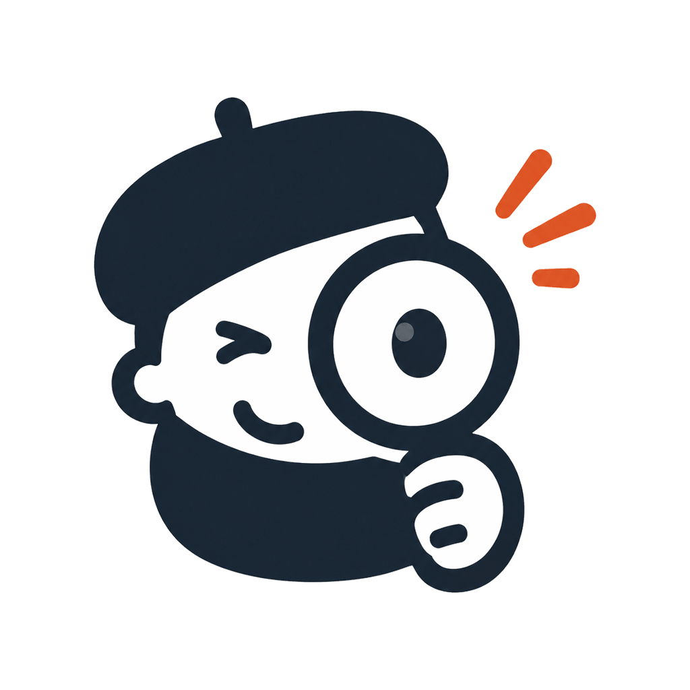
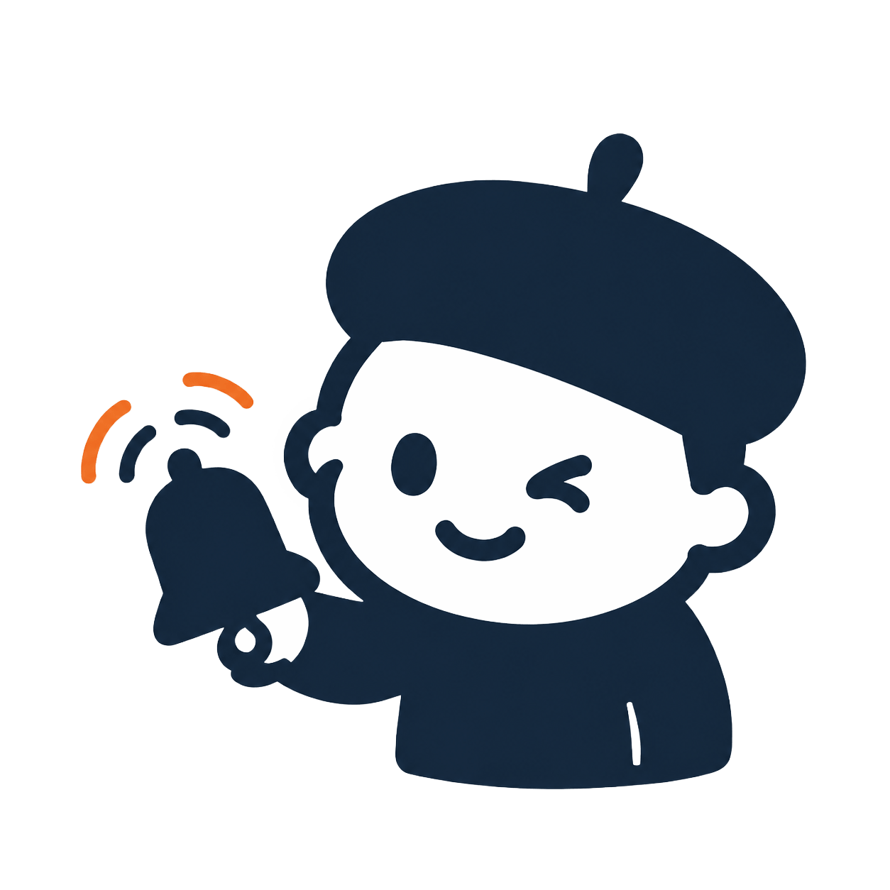
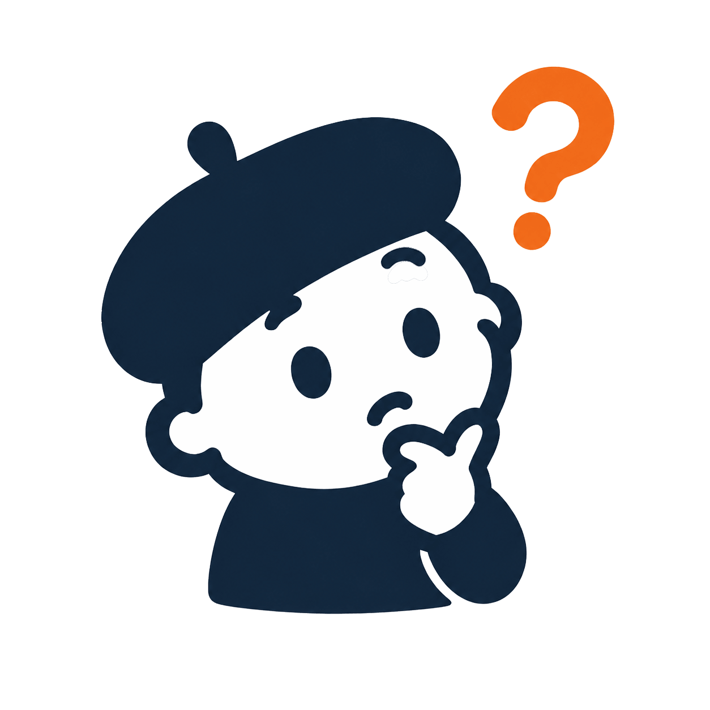

This computer
DingDong desktop host
Host
Automatic ClipboardPer device
Agent remindersOn after permission
Older Clipboard itemSend explicitly

DingDongFree and open source, for macOS and Windows
DingDong lives in your menu bar or system tray. Search and reuse the text, images, and files you copy. Keep one set of Prompts, Skills, and MCP servers for Codex, Claude Code, and other Agents. When an Agent finishes, gets stuck, or needs a decision, you hear it on your computer and can see it on your phone.
Supported Agents end each reply with a DingDong line: the Prompts in effect, the Skills that matched, the MCP servers available, and the Token total when the session reports one. Claude Code can also show it in the status line, next to your existing HUD.
A * after a Skill means its full instructions were loaded. A * after an MCP means one of its tools was called, even if the call failed. Prompts carry no marker. You can hide the Token total in Settings.
agent DingDong
Try a message below to see a simulated reply and resource line.
Done. The layout and local preview have been checked.
https://github.com/JevonsCode/DingDongBuddy
The copied value will appear at the top of Clipboard.
Scan each computer's QR code to pair it. You can see which computers are online and switch the active one. Files, clipboard items, and reminders stay grouped by their source computer.
Scan the QR code on your computer to pair your phone. Files, clipboard items, and Agent reminders stay grouped by the computer they came from.
Close the window with the red button to read the full details.

Longer description · source · completion time
Items copied before pairing stay on the computer. To share an older item, choose Send to Device.
The web app does not read it. Choose text or a file and tap Send to share it.
Verified local connections have no file-size limit. Other routes keep the 25 MB limit. Follow progress on desktop or mobile, and pause or resume while both apps stay open.
The desktop device manager separates Online devices from Connection history. Open Transfer history for the latest 100 finished file records saved locally across restarts. A history entry is not a file backup or a transfer you can resume after restarting.
On the same local network, DingDong connects directly; otherwise it uses an end-to-end encrypted relay. Android works in the browser without installing. On iPhone and iPad, add it to the Home Screen to get push notifications. Tap the tabs or swipe between them on mobile; a notification opens Agent reminders.
Set the project or Agent for each resource. Matching Prompts arrive at task start. Dynamic Skills show a description before the Agent loads them. MCP servers are added to supported clients.
Keep one copy of each Prompt, Skill, and MCP server, then choose which projects or Agents get it.
Close the window with the red button to read the full details.
Group resources and choose their projects or Agents
Pi, Grok Build, and Windsurf sync Skills only for now. MCP and completion alerts vary by client; DingDong shows what each one supports.
Automatic resource selection starts off. Enable it in Resource Manager → AI+. Your model can narrow eligible Prompts, Skills and MCP references from the task and candidate descriptions. Required and explicitly named eligible resources stay; failures fall back to local matching.
AI+ setup and data boundaries →Open Version history on a Skill to compare any two saved versions. Manual saves and online refreshes retain changed documents and package files locally. Restoring creates a new version and preserves the current scope and enablement.
Skill version history guide →Agents that retain a complete snapshot can confirm it to receive only changes. Skill loads can also reuse a confirmed version. After losing context, the Agent requests the full content again.
Bridge integration guide →Enable the resources and choose where they apply first. Then ask in your own words.
The project Prompt is applied automatically before the Agent starts.
The Agent matches the Skill description, then loads its full workflow and files.
The configured MCP is available, and its tools are called only when needed.
Local usage records
Open Token usage for a daily heatmap, date and source filters, day details and CSV export. Optionally include DingDong’s own model usage or view it separately; changing filters makes no model request.
See each Agent’s daily Token use on a heatmap. Only the numbers are stored, never the chats.
Close the window with the red button to read the full details.
Counts come from the local records that Codex, Claude Code, and Pi write. Repeated cumulative records are counted once.
When a day is incomplete, its total is shown as a minimum with ≥. Days with no usable data show as unknown instead of a made-up zero.
Only numeric totals are saved, on this computer, without any chat text. They are never sent with the anonymous install statistics. Token counts measure usage, not cost.
Find Jev and the macOS selection tools in Resource Manager → Plugins. Nothing is installed or turned on until you choose it.
Install Jev and the selection tools when you want them. Select text to translate, explain, or polish it.
Close the window with the red button to read the full details.
Install Jev and add your own API key. Your Agent can call it for judgments, choices, and scoring, with Jev token usage tracked separately.
Jev website and termsDefaults to ⌘⌥A on macOS and Ctrl+Alt+A on Windows. DingDong only opens the system tool; it never reads the screenshot.
Copy selected text, or translate and explain it with your configured model. Supports local models and OpenAI- or Anthropic-compatible proxies.
These are the defaults. Record your own global or workspace shortcuts in Settings; they take effect immediately.
Open Settings → Keyboard shortcuts to record a combination. Hold Control on macOS or Alt on Windows to select the first five visible clipboard groups with 1–5. Combinations already used by DingDong or reserved actions cannot be saved.
| Action | macOS | Windows |
|---|---|---|
| Open or hide Clipboard | ⌘⇧V | Ctrl+Shift+V |
| Dynamic / Library / Clipboard | ⌃Q / ⌃W / ⌃E | Alt+Q / Alt+W / Alt+E |
| Focus Clipboard search | ⌘F | Ctrl+F |
| Open, reset, or hide filters | ⌘R | Ctrl+R |
| Use visible item 1–9 | ⌘1–9 | Ctrl+1–9 |
| Use visible item 1–9 as plain text | ⌥⌘1–9 | — |
| Select visible Clipboard group 1–5 | ⌃1–5 | Alt+1–5 |
| Move Clipboard item selection | ↑ / ↓ | ↑ / ↓ |
| Move Clipboard group selection | ← / → | ← / → |
| Preview selected item | Space | Space |
| Use selected item | Return | Enter |
| Close preview, then hide panel | Esc | Esc |
Settings stay on this computer and apply immediately unless a restart is noted.
| Setting | Default | Options or limits |
|---|---|---|
| Open or hide Clipboard | ⌘⇧V | Configurable; Windows defaults to Ctrl+Shift+V |
| Launch at startup | Off | On / off |
| Hide Dock icon (macOS) | Off | On / off |
| Language | System | System / English / 中文 / Español |
| Theme | Light | System / Light / Dark |
| Window opacity | 90% | 82%–96% |
| Default workspace | Dynamic | Dynamic / Library / Clipboard |
| Clipboard monitoring | Off | On / off |
| Clipboard retention | 5,000 items · 120 days | 20–5,000 items · 1–730 days |
| Remember Recent Agents | On | On / off |
| Quick panel Agent count | 21 | 1–500 |
| Recent Agent limits | 500 details · 24-hour count | 1–5,000 details · 1–8,760 hours |
| Reminder sounds | DingDong Classic · needs input: same as completion | Per reminder: built-in, custom WAV, system, or muted |
| Agent reply footer symbols | ♥ / ♦ / ♠ | Customize Prompt, Skill, and MCP separately |
| Conversation Token usage | On | Exact totals for supported Codex, Claude Code, and Pi sessions; unsupported evidence is omitted |
| Reminder colors | Completion: orange · needs input: amber | Per reminder: orange / pink / blue / green / purple / amber |
| Quiet hours | Off | 22:00–08:00 by default, adjustable |
| Send reminders to paired phones | On | Completion and needs-input separately |
| Allow Agents to read clipboard content | Off | On / off |
| Allow beta updates | Off | On / off |
| Anonymous install and update statistics | On | On / off |
| Local Agent API port | 2333 | 1024–65535 · restart required |
Connected Agents can send a reminder when they finish, get stuck, or need a decision. Pick a built-in sound or import an audio file.
In Settings → Notifications, control completion and needs-input separately, or add named reminders with their own sound, color, tray style and phone switch. Agents select one by reminderId; saving a condition does not start a monitor. Import PCM WAV audio up to 15 seconds and 5 MiB.
Reminder setup and Agent tools →Short clips shared by other DingDong users: funny sounds, classic game and movie lines, cartoon effects. Each is 3 seconds or less. Preview one, click Install, and it goes straight into DingDong.
Choose a built-in sound or import your own in Settings. DingDong uses it for alerts from connected Agents.
The quickest way: copy the instruction below and paste it into your Agent. It adds DingDong as an MCP server and keeps your existing settings.
Built-in Agents connect in one click. For anything else, copy the setup instruction into it, or open an issue and tell us.
Close the window with the red button to read the full details.
DingDong finds Codex, Claude Code, Cursor, Gemini CLI and the other built-in Agents on this computer. Click once in Resource Manager → Agent access; it lists the configuration changes before writing them.
Send the setup instruction below to your Agent. It adds DingDong as an MCP server and keeps your existing settings.
Tell us which Agent you use, and we’ll look at adding it to one-click setup.
Open an issue →For a client that supports MCP, add the matching snippet to its settings. The examples below use the macOS installation path.
{
"mcpServers": {
"dingdong": {
"command": "/Applications/DingDong.app/Contents/MCP/bundle/bin/dingdong_mcp"
}
}
}[mcp_servers.dingdong]
command = "/Applications/DingDong.app/Contents/MCP/bundle/bin/dingdong_mcp"dingdong_bridgeAsk DingDong what might help with the task at hand.
dingdong_search_assetsFind prompts, Skills, and MCP configurations by name or keyword.
dingdong_create_resourceCreate a disabled Prompt or MCP after checking for duplicates.
dingdong_update_resourceUpdate an existing Prompt or MCP while preserving omitted fields.
dingdong_install_skillInstall a complete Skill package through the dedicated safe workflow.
dingdong_bind_resource_scopeBind the resource to the project or Agent scope you requested.
dingdong_get_assetOpen one resource. Start with the description, then read the full text if needed.
dingdong_load_skillLoad the Skill the Agent has decided to use.
dingdong_recommend_mcpFind an MCP configuration that fits the current task.
dingdong_notifyRing when the Agent is stuck or needs you, or play a named reminder. The completion alert comes from the hook.
dingdong_read_skill_fileRead one supporting file of a loaded Skill.
dingdong_confirm_mcp_useRecord that a returned MCP tool was used (not needed in Claude Code).
dingdong_upsert_trigger_groupCreate or replace a trigger group for a project path, repository, or source.
dingdong_set_skill_deliveryChoose how a Skill reaches each Agent: dynamic, user-level, or project-level.
dingdong_get_skill_deploymentsRead a Skill’s delivery policy and where it is actually installed.
dingdong_reconcile_skillSync a Skill to the Agents again and report the result.
dingdong_list_remindersList named reminders and imported sounds.
dingdong_upsert_reminderCreate or edit a named reminder (up to 32 of your own).
dingdong_delete_reminderDelete a custom reminder; built-in ones can only be turned off.
dingdong_import_reminder_soundImport a PCM WAV of up to 15 seconds and 5 MiB.
dingdong_set_reminder_soundsSave the sounds for completion and needs-input reminders.
dingdong_jev_*With Jev installed: status, check, choose, and score.

You can use scripts too.The local API can check status, search resources, read a clipboard overview, and open a DingDong page.
/agent/manifest
/agent/bridge
/agent/capabilities
/library/{id}
/clipboard/insights
/library
/library/export?type=skill
/library/import
/ding
Requires macOS 13 or newer. Not sure which Mac you have? Open Apple menu → About This Mac. “Chip” means Apple silicon; “Processor” means Intel.
Want new features early? In DingDong, turn on “Allow beta updates” under Settings → Version.
Loading GitHub release asset counts…